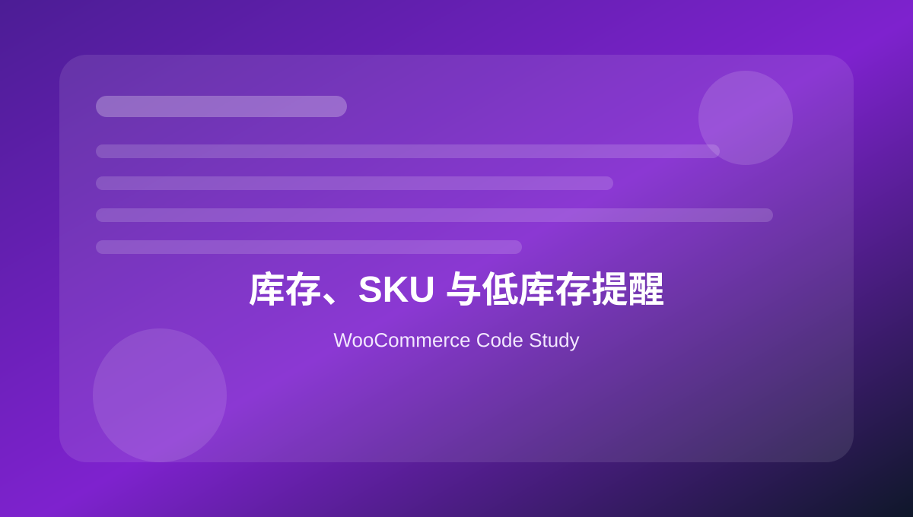

16 库存、SKU 与低库存提醒
整理库存读取、扣减、恢复、低库存邮件、自定义库存逻辑和后台库存列。

本页关键词
stock
SKU
inventory
low stock
backorders
学习目标
- 会读取和更新库存
- 会监听低库存事件
- 会处理缺货状态
- 会按 SKU 同步库存
- 知道库存逻辑不能轻易绕过 WooCommerce
代码使用提醒
本页代码用于学习和研究。复制到正式 WooCommerce 网站前，请先备份，并优先在测试环境验证。
凡是影响价格、库存、支付、订单、邮件和客户数据的代码，都需要完整测试购物车、结账、付款、退款、邮件和后台订单处理流程。
1. 读取库存信息
基础 · php
<?php
$product = wc_get_product( 123 );
if ( $product ) {
echo esc_html( $product->get_sku() );
echo esc_html( $product->get_stock_quantity() );
echo esc_html( $product->get_stock_status() );
}
库存状态和库存数量不是同一个概念。
2. 更新库存数量
基础 · php
<?php
$product = wc_get_product( 123 );
if ( $product ) {
$product->set_manage_stock( true );
$product->set_stock_quantity( 50 );
$product->set_stock_status( 'instock' );
$product->save();
}
库存更新建议通过产品对象完成。
3. 根据 SKU 同步库存
实用 · php
<?php
function mywoo_update_stock_by_sku( $sku, $qty ) {
$product_id = wc_get_product_id_by_sku( $sku );
if ( ! $product_id ) {
return false;
}
wc_update_product_stock( $product_id, absint( $qty ), 'set' );
return true;
}
外部 ERP 同步时常按 SKU 匹配产品。
4. 监听低库存事件
实用 · php
<?php
function mywoo_low_stock_alert( $product ) {
if ( ! $product instanceof WC_Product ) {
return;
}
wp_mail(
'inventory@example.com',
'Low stock: ' . $product->get_name(),
'Current stock: ' . $product->get_stock_quantity()
);
}
add_action( 'woocommerce_low_stock', 'mywoo_low_stock_alert' );
邮件提醒仍依赖 SMTP 送达。
5. 下单后追加库存备注
实用 · php
<?php
function mywoo_order_stock_note( $order_id ) {
$order = wc_get_order( $order_id );
foreach ( $order->get_items() as $item ) {
$product = $item->get_product();
if ( $product && $product->managing_stock() ) {
$order->add_order_note(
'Stock after order for ' . $product->get_name() . ': ' . $product->get_stock_quantity()
);
}
}
}
add_action( 'woocommerce_reduce_order_stock', 'mywoo_order_stock_note' );
库存扣减后记录备注，便于排查。
6. 禁止缺货产品购买
实用 · php
<?php
function mywoo_disable_purchase_for_backorder( $purchasable, $product ) {
if ( $product->is_on_backorder() ) {
return false;
}
return $purchasable;
}
add_filter( 'woocommerce_is_purchasable', 'mywoo_disable_purchase_for_backorder', 10, 2 );
是否允许缺货购买要结合业务规则。
本页总结
库存代码要特别谨慎，因为它会影响真实订单和履约。SKU、库存数量、库存状态和缺货策略要统一管理。